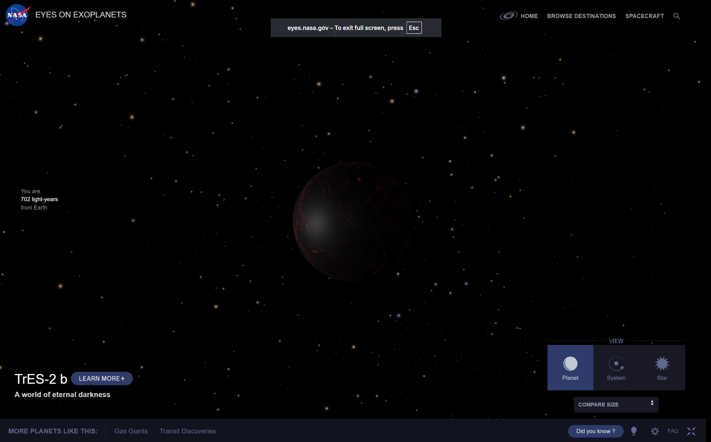

This site is about TrEs-2b, One of my favorite exoplanets, which is known as "The planet of Eternal Night". Here is one cool fact: It is the darkest planet ever discovered orbiting a star, this alien world is less reflective than coal. Inside its atmosphere, you’d be flying blind in the dark. Some scientists think an eerie deep red glow would emanate from its burning atmosphere..
